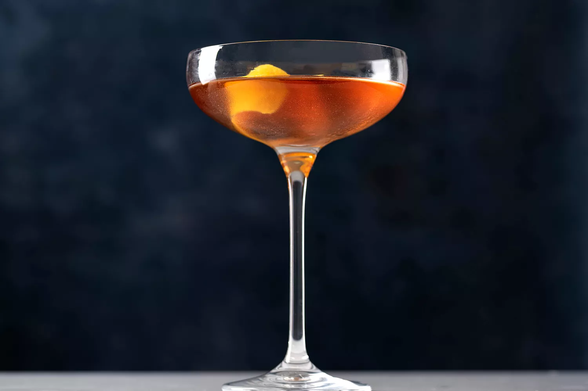

Martinez
Ingredient list
- 2 ounces gin
- 3/4 ounce sweet vermouth
- 1/4 ounce maraschino liqueur
- 1 dash aromatic bitters
- Lemon twist, for garnish
Gather the ingredients.
Classic Martinez Cocktail ingredients
- Pour the gin, sweet vermouth, maraschino liqueur, and Angostura bitter into a mixing glass with ice cubes
- Stir well.
- Strain into a chilled cocktail glass
- Twist the lemon peel over the drink and drop it into the glass. Serve and enjoy.
